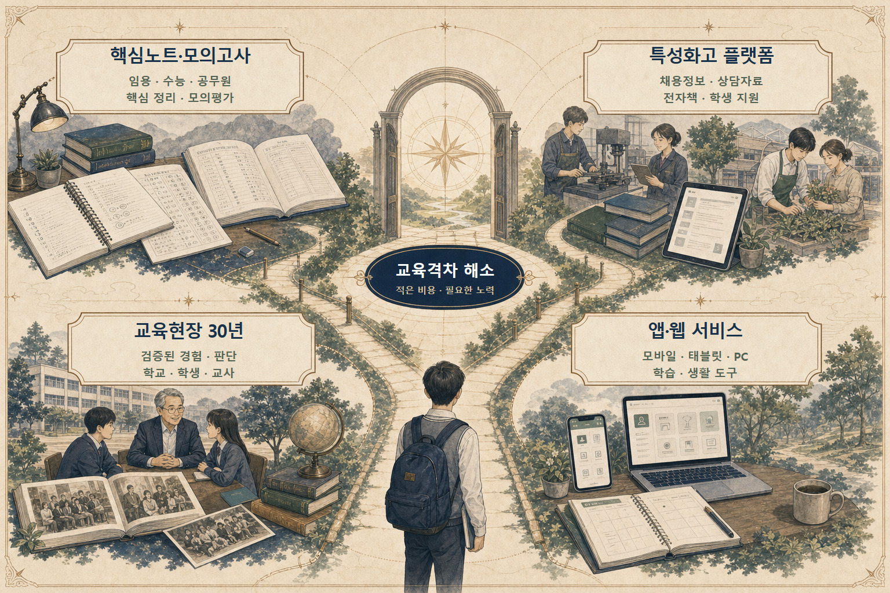

시험 준비 · 특성화고 공익 서비스 · 교육 앱·웹
네 영역 바로가기

임용·수능·공무원 시험을 교육전문가가 공동 연구하고 검수합니다.
채용정보·상담자료·전자책으로 학생과 교사의 실무를 돕습니다.
전산부·진로·글로벌현장학습·도제학교로 이어진 동행의 기록입니다.
학습·체험·동화·게임·기관 웹을 기획부터 운영까지 만듭니다.
공식 공고와 첨부서류를 한 번에.
학교 현장의 반복 검색을 줄입니다.
권한에 맞는 화면만 안전하게.
검수·집필·자문·서비스 협업